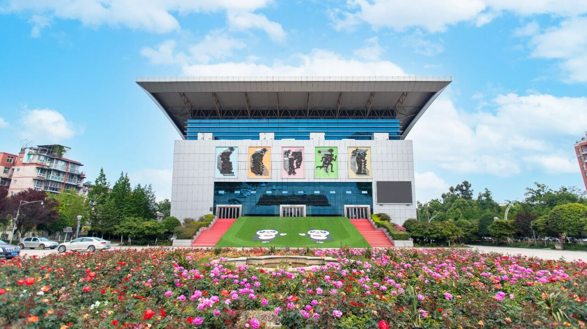

场 1
镜 1
四川传媒学院
新学期，第一镜。
过卷中…
开拍

欢迎来到四川传媒学院。
川传分东西两个校区，东区像老片场，西区是影视硅谷。
你接下来只有
十二次
行动机会——点哪里，你的川传生活就往哪边去。
01 · 怎么称呼你
02 · 你更像哪种镜头里的人
03 · 你住哪边
🎁 迎新礼包贴士
学生事务中心可录宿舍密码锁指纹；东西区间有校车。
进校 · 看地图
选择你的川传生活
🔊
⚙
东区
西区
未探索
已探索
占位图 · 校园平面图（东区）
占位图 · 建筑内景
场景图
● REC
场
—
地
—
角
—
空镜
遭遇
选择
收获
下一条 ▸
✕
川传手账
地标
贴士
校友
✕
四川传媒学院 · 选择你的川传生活
二维码位
博学笃行 · 德艺双馨
保存图片
关闭
🎬 彩蛋 · 园校合一，产教融合
摄影棚、融媒体、博物馆，你都走了一遍——川传的校园，本来就是一个片场。
继续 ▸